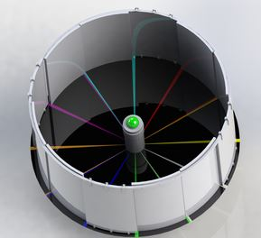
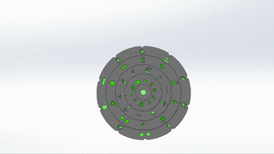
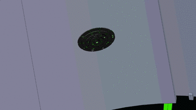
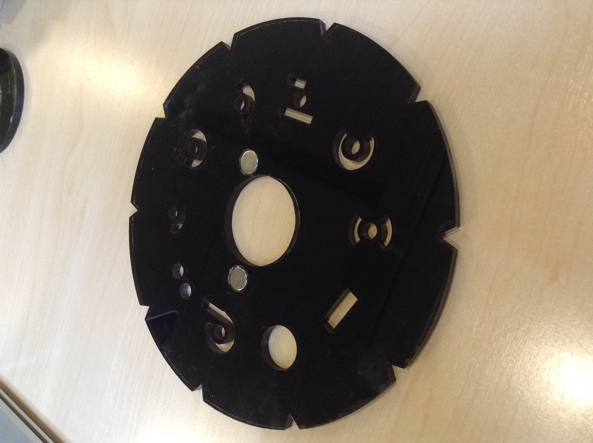
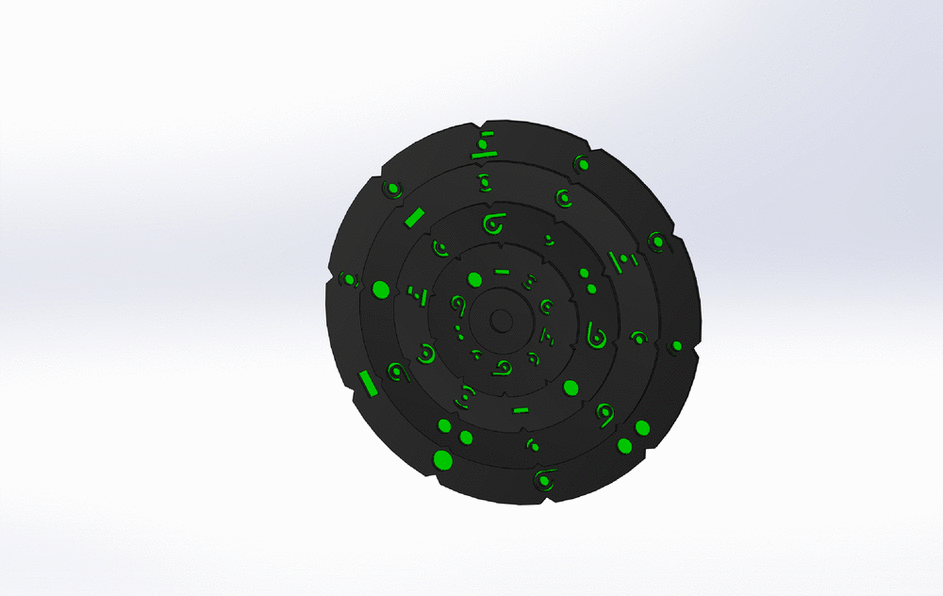
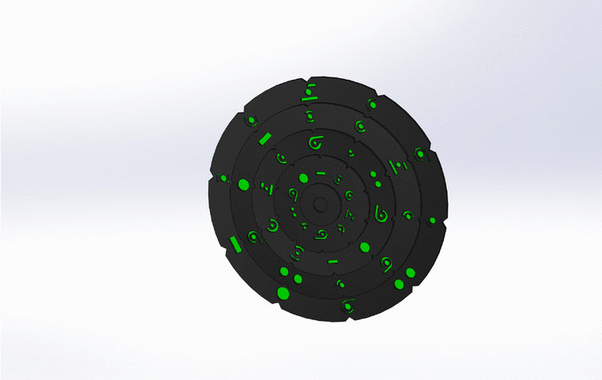

DesignMechanical | ElectricalMechanicalTo establish powerful design aides solid models was created to ensure flexibility and usefulness of the product. Using solidworks a scenario in which we imagine the product could be use in was designed showing the effects of the puzzle. Within the scenario we imagined a circular room that can rotate and consist of a puzzle that gave a color in the middle to select the door of interest, a time selection device to input a code from the clues that the user will have and a moving door that would take them to a time either in the future or the past. Starting from imagining a scenario of time selection devices in this room. It helped determine the dimensions that would fit the product we were manufacturing. The time selection device was created to fit a situation like this room. Th solid model of the time selection device offers a 3D look of the system and can also simulate the motion of our production. The dimensions used in the solid model are the same dimensions that are used when we generate the part by laser cutting acrylic. Thus the primary use of the solids models were to generate drawings to make manufacturing rate as fast as possible. In our model we have rings displayed with a 3.6in, 5.4in, 7.2in and 9in radius. As a result of the solid model design. The design also tells us how the support rings distance each ring giving it room to rotate. To give an accurate view of how we imagined that our product could be used we made an animation to show how our product could influence the 5Wits adventure. Each section of the ring rotates until the symbols representing the code lights up. How we imagine that the motion of the product while the user turns to find the year 2435 would be like after finding the year 2435. After the time is solved a door opens them up to an experience they won’t forget. ElectricalThe purpose of the electronics is to detect when users have rotated a time selection disc to its correct position and give them feedback. Position Detection:In order to detect the disc’s correct position, we decided to use hall effect sensors and magnets. For a quick basic background, a hall effect sensor is “activated” when it feels a magnetic field. So, it can tell when it sees a magnet’s north pole, south pole, or nothing at all. The magnets would be placed in the disc next to the two “correct” symbols per disc, one of them facing north-pole down, and the other south-pole. Using this method we would be able to detect 2 correct symbols per disc. For this example, we would be able to detect one year to the future and another to the past. Self Resetting: Since all the electronics (sensors and LEDs) are controlled by a microcontroller (Arduino in our case), the time selection device can act as either the Year, Month, or Day Time Selection Device for different 5Wits experiences. This flexibility allows many combinations of “date clues” and “correct configurations” on the time selection devices. To achieve this function, we would use RGB LEDs in order to change the device’s color for each 5Wits experience. Then, the microcontroller would know which “correct configuration” to look for in each device. Using this method, the Time Selection Devices will not require to be “scrambled” after each group exits the room. Feedback: LEDsIn order to give the users feedback while they are interacting with the device, we would use visual and audio feedback. The visual feedback would be a series of functions with the LEDs that would change as the user goes making progress with each disc on the device. For example:  Disc #2 is correct. Normal blink rate. Discs #2 and #3 are correct. Quicker blink rate. Discs #2, #3 and #4 are correct. Quickest blink rate! In addition, every time a new ring gets rotated to its correct position, a nice sci-fi sound effect will play to give audio feedback to the users. Once all the rings are placed in the correct position, its lights would change to white and begin fading, indicating that that specific device has been correctly set. |